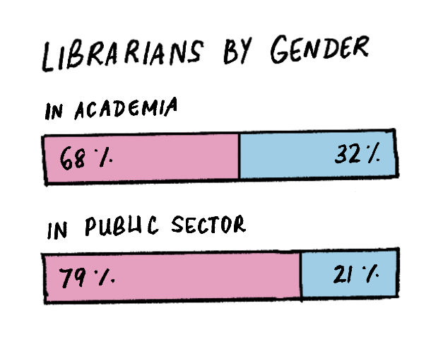

The Gender Wage Gap
This project glitches (gloriously) on fancier iPhones : we’re not smart enough to code against Apple’s “modern” design-decisions, and’ve been unable to fix it. Help welcome.
Some context, first—
When we began this project, we intended to take an existing news article (on an important topic, but which was drab to read), and use our designer’ly abilities to make it less forgettable. But as we started reading about the Gender Wage Gap, we kept collecting notes from different articles dotted on the internet, and (gradually) this essay began to take shape.
Fewer women get promoted
In 1999, a woman librarian was less likely to be promoted to director, even if she had the same experience and qualifications as a male librarian — and even though women formed a majority within the profession.
In other words: There were more women directors and more women librarians, but men were still more likely to get promoted from being a librarian to a director.

Also, men’s salaries for the same position tended to be higher than women’s.
(Source: American Library Association)
Women earn less than men
Closer to the present day (in 2022), men earned an estimated 82% of all agricultural-labour income in India, whereas women earned merely 18% of it.
Could this be because more men engaged in agricultural labour, or even because they worked longer hours than women? Perhaps. So, let’s normalise the data, and look at 2 people, one woman and one man, each working for exactly one day each.
The man got paid ₹383 for the day, and the woman ₹294.
This difference in earnings varied from state to state: it was widest in Tamil Nadu (with a wage gap of 112%), and still fairly wide in Goa (62%), Kerala (47%), Chattisgarh (43%) and Telangana (43%). Jharkhand and Gujarat had the lowest wage-gap (at 6%), but the daily-wages in those states were also much lower than the national average. In those states, a woman would earn only about ₹250 per day, whereas a woman in Kerala would earn more than twice as much.
If we shift our attention to salaried workers—
The average salaried man made ₹20,666 a month : a woman, ₹15,722.
Not only did Gujarat have a wide wage-gap (62%), but also Gujarati women earned the lowest average salary (₹10,419) in India.
Also, the pay-gap seemed to widen as women moved up in their career ladder: a woman in a key management position made just half of what a male in the same position did.
Explanations for the wage gap (from various sources) cited women’s educational decisions, unfair treatment by employers, diminished work hours, expectations to balance work with family, under-representation in leadership, and career-breaks, among others.
(Source: The Hindu Business Line)
Women of all ages suffer the wage-gap
(Source: Infogram / US Census Bureau, 2022)
Are women’s choices to blame?
Women seem to overwhelmingly choose jobs with lower pay or fewer work-hours (such as nursing, teaching or childcare) while a proportionally higher number of men choose better-paying and more-prospective jobs (think medicine, law or engineering).
So: While some of the blame for the wage-gap may be attributed to discrimination, can the rest of the blame lay with a woman’s own choice of occupation?
Well, not really.
Wages drop as more women join a field
Historically, most careers with a female majority become devalued over time. One study found that choice of occupation and industry form the single largest cause of a gender pay gap (and contributes for more than half of gap). Another study reported how, when women enter fields in greater numbers, the field’s pay declines — for the very same jobs that more men were doing before.
Paula England, a sociology professor at NYU, commented how, once women start doing a job, “It just doesn’t look like it’s as important to the bottom line or requires as much skill, [and] gender bias sneaks into those decisions.”

Some more examples: Wages fell when women in large numbers became designers (by 34 percentage points), housekeepers (21 %pt) and biologists (18 %pt). The reverse was true when a job attracted more men: Computer programming used to be a relatively menial role done by women, but wages’ve grown since male programmers began to outnumber female ones.
(Source: NY Times)
Women perform more unpaid work than men
The ‘motherhood penalty’ signifies the adverse effects that motherhood can impose on a woman’s career, particularly concerning hiring decisions and workplace perceptions.
Mothers may encounter disparities in wages and promotions compared to their childless counterparts, even with similar qualifications and experience. When employers evaluate the candidacy or advancement of women who are mothers, they may be influenced by (biased) assumptions about their employee’s commitment, availability and productivity.
The motherhood penalty can lead to reduced opportunities for career growth and advancement.


(Source: Our World In Data)
Contributing to housework and childcare contributes to lower wages—yes—but we’re not writing this to discourage men from doing housework.
Women work a much greater amount of unpaid work through their lives, such as housework and childcare, outside of their regular working hours. Which is most-likely why men can work for more paid hours than women (and end up earning more than women do).
Closing notes
How our society constructs gender and how we view women and mothers — both — pose big challenges to overcoming this problem. Systemic biases unfairly pin most of the world’s unpaid labor onto women.
In essence, the wage gap is not a simple set of obvious numbers, but instead a complex set of discriminatory systems that take decisions made by women to uplift themselves in their careers and turns it back into the oppressive system that has been developed over time.